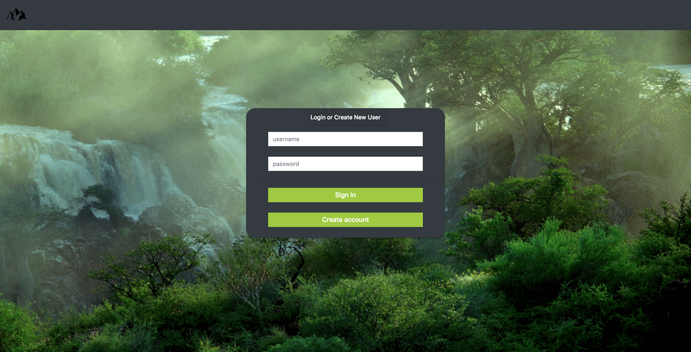

Jacob Simms
Portfolio
Pictures are links to projects
Modjül
Dynamic web app project. Worked in a team of 5 which was the largest team I had worked with at that point. Was a great learning experience. We used kanban with sticky notes to track progress and assign tasks. I learned entity mapping using JPA with a mySQL server.
 Github RepoHumidor
First experience creating an MVC app that uses a mySQL database.
 Github Repo
Github Repo
Calculator
Masters of Business Administration
- Spring 2006 - Spring 2007
- Emphases: Finance and Marketing
- Grade Point Average: 3.913
US Presidents Web App
US Presidents Web App
- Spring 2006 - Spring 2007
- Emphases: Finance and Marketing
- Grade Point Average: 3.913
Credentials
EMPLOYMENT/EDUCATION
Skill Distillery, Student
Starbucks, Barista
- Communicating with customers to make sure their needs were met
- Responsible for customer conflict resolution
- Followed specific guidelines for health, safety, and food/drink freshness
- Team focused environment
Stephen F. Austin State University, Computer Science Major
- Stephen F. Austin Dean’s List Fall 2012
- Regents Scholarship
- Stephen F. Austin Computer Science Scholarship
- First Place SFA Programming Award-Novice
212 Resources, IT Intern
- Provided user support for local corporate and satellite location users
- Responsible for inventory update project involving hardware allocation
Andrews Solutions, IT Technical Assistant
- Provided installation support
- Tested infrastructure components